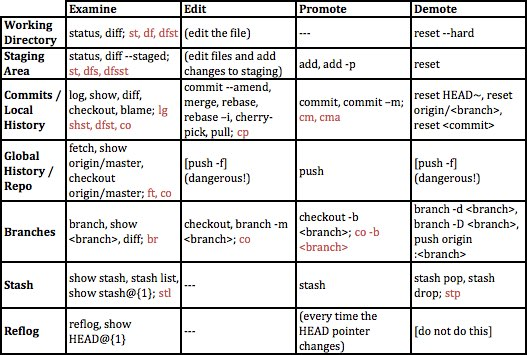

Thinking in Git
I am in the process of writing a tutorial/treatise on git. Git is stunningly beautiful. It really deeply makes sense in the way that physics makes sense: once you learn a deep rule, it applies everywhere, and at the end of the day everything boils down to a few deep rules.
But most people don't see this, and it's hardly their fault. Every tutorial I know of teaches git shallowly, and as with physics, a shallow understanding of git is confusing, hard-to-use, and unpleasant. This is a failure of the git community. I think I can correct it; in fact, I think I already know all the key pieces for doing so. I just have to move them from my head onto paper.
Here is my progress so far, the start of draft 1. There are some rough edges in it. It's approximately a preamble and introduction.
Thesis
Git is about understanding what you've done by organizing it. Good code organization makes it easy to understand many of the code-level decisions you've made and are making, significantly reducing bug creation. Good code organization makes it easy to change past decisions, speeding up debugging, refactoring, and feature changes. Still more, good code organization removes distractions from your workspace, helping you focus on the task you're addressing.
Git is a tool for constructing, reviewing, and reconfiguring code history. It models history as an accumulation of discrete "commits" (a commit is a set of changes to lines of code; the commit is the fundamental unit of git). Your code history is only as understandable - and therefore, only as manageable - as your commits, so your commits should be well labeled and they should be small. Complicated systems are made understandable through decomposition into smaller subcomponents that each make sense individually. Just as good code is organized into small functions, good code history is organized into small commits. Each commit should be "atomic," making a single complete update.
My goal is not to get you doing the bare minimum of git as quickly as possible. My goal is to get you to use git powerfully as quickly as possible. If you want to ape basic commands in a fragile fashion, go elsewhere for your tutorial.[1] I aim to teach you an integrated framework for thinking in git.
Thinking in git
Experts tend to teach command line tools in terms of the commands. They know all their tools' common commands like language and they rely on this knowledge constantly, so they assume it's necessary knowledge for using the tool. They are wrong, for the same reason students memorizing formulas anywhere are typically wrong: the commands are hollow without the conceptual framework. If you can find the commands when you need them, memorization isn't important. This tutorial will get straight to what's important: understanding the framework.
Git is a system for understanding and managing code history. Git organizes your history so you can orient yourself in the midst of complexity and safely, confidently develop code. History is an accumulation of changes. The git system collects changes in various locations, and using git is about looking inside these locations and moving changes around.
There are four basic locations:
working directory → staging area → local history → global history [2, 3]
We can also think of these as the state of a change flowing through git's pipeline:
unstaged → staged → committed → pushed
Histories are accumulations of changes bundled into packages called commits.[4] A commit is the atomic unit of history. It is a set of changes specifying what lines to create and what lines to delete to change code from the previous state to the current state. Each commit also contains a pointer to the state of history preceding it such that we can determine the code's state "at" the commit by applying the commit's changes to the previous state. Since the previous state of history is just another commit applied to the history before it, history has a recursive structure - the current state of code is calculated by successively applying each commit from the first one to the most recent.
Back to those locations, then.
Local history is your personal copy of the codebase's history. It exists on your computer, and you control it.
Global history is the official copy of the codebase's history. When you work with collaborators or publish your code online, this is the shared resource you coordinate through. It exists on a server called a repository, or "repo", which is usually online; sites like GitHub host repositories.
When you add to your local history, you need to send these new commits to the global history on the repository. If you have collaborators, they can then receive your updates from the repository and add their own on top of it. Similarly, you can ask the repository to give you any new commits it has collected from others.
Since histories are built of commits, we need a way to build commits. A commit is a packaged set of changes to your files, and the simplest way to build a commit is to package up all the changes we've made since the last commit. (If this is the first commit, that just means all of our code.)
When you make changes to your code, these are not immediately committed to local history. Initially, they are just "changes to the working directory" - your working directory contains all the raw changes to your codebase that you haven't done anything with. So in the case above, committing all changes moves everything from your working directory into a local commit, leaving your working directory clean.
Often we've made some changes we want to publish along with others we're still working on. We use the staging location to create a commit from just some of our changes. We can select individual changes to promote to staging and, once everything we want to commit is staged, wrap them up in a commit. Staging makes your workflow much more flexible than if you had to commit everything at once, and empowers you to organize the evolution of your codebase. This is our first example of git as a way to control history, and it's a big deal: code easily degenerates into an incomprehensible mess, and constructing commits smartly helps you organize this complexity.
Overall then, we have four ordered locations. When we edit our code, these show up as unstaged changes in our working directory. We add changes we're happy with to staging, then commit them to local history. Finally we push them to the global repository. At any point along the way we can look at what's inside a location to orient ourselves. If we make a mistake or change our mind, we can go back the other way, yanking staged or committed changes back to the working directory.
We'll learn about additional locations down the road, but those too will conform to a standard structure: you can look inside, edit what's there, promote things from an earlier stage, and demote them back again. Most git commands just do one of these things, and this structure informs a framework for git commands.
That's as far as I've gotten into the opening sequence. Here are the footnotes for the above bits, and below them are a few other scraps of content. If you're reading this and have thoughts of any sort, please let me know! I would love to get any feedback, negative or positive. Thanks!
↑ [1] Of existing resources, I recommend the documentation at git-scm.com, particularly Scott Chacon's book Pro Git. Start with chapters 1-3 for a good introduction, then hop to 7 and 8 for the power-up features. I also recommend Tom Preston-Werner's Git Parable from 2009 - it's insufficient on its own for learning git, but it's an impressive step towards communicating git as a framework for thinking. It may have influenced my own desire to write a proper explanation of git, though I don't remember anything particular. (n.b. TPW founded GitHub and ran it for six years.) Of the web's current offerings, the pair of these together seems like your best bet.
↑ [2] As an aside, many things in git go by multiple names, and sometimes the same name is used for different things. I'll do my best to help you handle this difficulty by repeatedly pointing it out and reconnecting vocabulary words to their meanings, saying it in a slightly new way each time. Here, "history" can also be called commit history or just commits, and often we'll just say "repository" or "repo" when we refer to global history.
↑ [3] Later we'll talk about other locations:
- Branches allow you to keep track of different possible histories. Branches have their own local and global history, since they also sync with the repository; in fact, when we refer to local and global history above, we're implicitly talking about a branch of code; the default and principle branch we use is the branch named `master`.
- Stashes let you move uncommitted local changes into a holding pen so you can disregard them until you ask them to return.
- Tags are like branches; HEAD is a special tag that always points to your current position in history.
- Reflog is a list of all the previous places the HEAD tag has pointed. This can help you find code that you might have otherwise lost.
- Remotes are how you track repositories. Yup - you can interface with more than one repository if you want. Your computer's local history is in fact actually a repository, just the same as any other. Git is a distributed version-control system that treats all codebase instatiations equally - we as users elect to designate one server the "global", "canonical" repository that we coordinate through, and this tends to be a very good decision, but git has no intrinsic preference on the matter.
↑ [4] Commits are also sometimes called snapshots, and we might refer to them as diffs since a commit takes the form of a diff between the code state it represents and the code state immediately preceding it. The act of creating a commit is called committing code.
Git learning sheet and configs
Here is how you should think about git's commands. There are various locations, and at each location you can look inside to see what's there. You can also edit what's currently there, promote things into that location from an earlier stage, and demote things from that location back to an earlier stage, except in a few cases.
Black commands are built into git; brown commands are my aliases, defined in my .gitconfig file. I recommend using these, they are quite helpful. To do so, download the file and store it as ~/.gitconfig on your machine. (Make sure to add the leading period!) Edit lines 2 and 3 to contain your name and email address and save the file. New terminal sessions can now use these aliases.
As we encounter git functionalities I'll introduce the individual commands, both those native to git and my aliases of them.
Some other valuable topics
The learning sheet above is a good core. It forms much of our roadmap. However, here are some things it doesn't get at.
- reading file diffs
- handling merge conflicts
- what counts as a commit argument
- arguments to diff (and to show, log, reset, checkout)
- interactive rebase
- dangers of `push -f`
- tags
- remotes
- style: rebase vs. merge
- style: commit message format
- style: using branches effectively
- style: team workflows with git
- .gitconfig
- .gitignore, .git/info/exclude
- deployment management
- submodules
Aside
Vim, git, and a lot of the tools from their era share at least one huge failing - they don't lead users to using them more powerfully. Nothing hints to you that more powerful features, like binding new key sequences, exist. It's assumed you'll learn about anything you need culturally from your community or by searching out tutorials and help pages. That's stupid, and I think it comes from the expert hackers who made these things having poor theory of mind for the larger community of programmers - they assume anyone using a tool seriously will have read its full documentation. (It also comes from a culture of judging one's competence by one's fluency in complicated technical material, and associating this competence with one's value as a human.)
Acknowledgement
Ali Yahya and Juan Batiz-Benet taught me everything I know about git (and quite a lot else). They are wise and patient mentors and wonderful people.